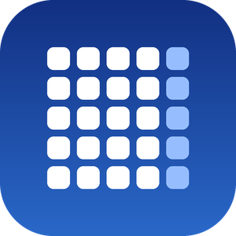

On the iPhone 6s Plus the Home Screen is stuck at 4 apps per row. GridSize lets you pick how many apps go in each row (3 to 8) and how many rows per page (3 to 10). Icons and widgets resize automatically so everything fits.
Changing the grid moves apps around to fill the new layout. Uninstalling or turning it off puts the grid back to stock, and apps reflow again.